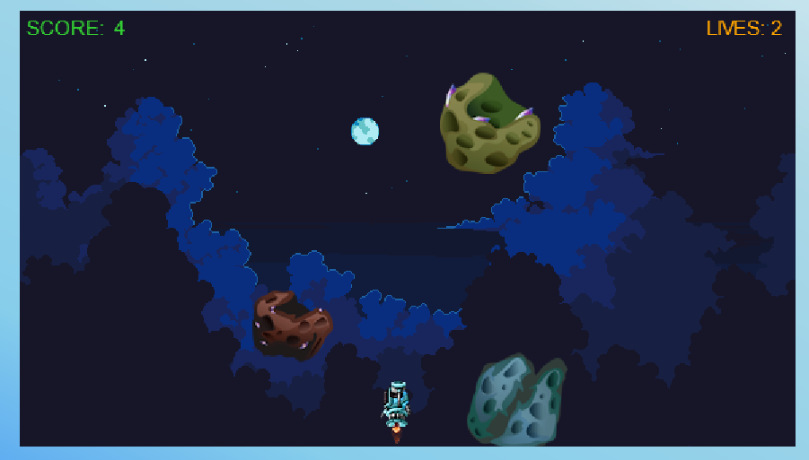
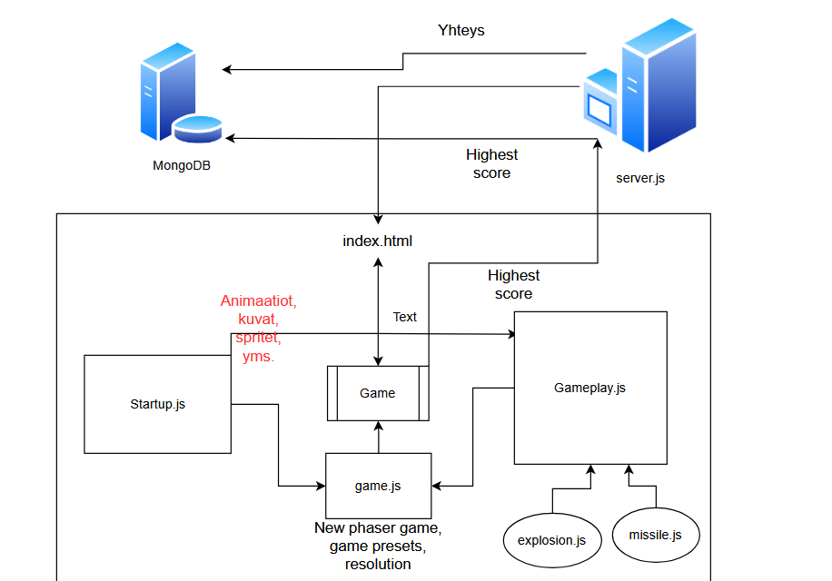

Harjoitustyön tarkoituksena oli tehdä yksinkertainen, verkkoselaimella toimiva full stack -peli.
Pelin toteuttamiseen käytettiin frontend-puolella JavaScriptia ja HTML5:ta. Backend-puolella
puolestaan käytettiin Node.js, Express.js ja tietokannaksi valittiin MongoDB. Erityisesti
frontend-puolella hyödynnettiin kurssin harjoitustyöinfossa ehdotettua JavaScript-kirjastoa
Phaser.io, joka on runko HTML5-sivuilla
toimiville peleille.

Peli on osa harjoitustyötä kurssilla Full stack -ohjelmointi TTC2080-3019 JAMKin IT-instituutissa
ja sen on toteuttanut Stefano Confalone.
Kaikki pelissä käytetyt assetit (kuvat, spritet) ja lähdekoodit (frontend ja backend)
löytyvät repositorion kansiosta /game.
/game-kansiossa on pääosin backend-tiedostoja, kuten server.js ja package.json.
Kuitenkin sieltä löytyvä index.html on sivu, jossa peli toimii. Se sisältää linkit .js-scripteihin.
Samasta kansiosta löytyy kansio /public, joka sisältää
kaikki nämä .js-tiedostot, joilla Phaser-peli toimii.
Public-kansiossa /assets sisältää pelissä käytetyt
kuvat ja 2D-spritet. Ne on ladattu ilmaiseksi vapaakäyttöä varten sivulta
craftpix.net.
Pelin rakenne ja tekoprosessi
Toimivuus
Ohessa on lyhyt video, jossa näytetään pinnallisesti,
miten peli toimii ja minkälainen yhteys on frontendin ja backendin välillä.
Suunnittelu ja toteutus
Alussa oli selkeää se, että oli tarkoitus tehdä pelimuotoinen JavaScript-sovellus hyödyntäen
kurssilla ehdotettua Phaser-kirjastoa. Myös toteutukseen tarvittavat ohjelmistot ja kielet olivat
valittu: frontend-puolella HTML5 ja JavaScript (Phaser.io) ja Backend-puolella
Node.js, Express.js ja MongoDB. Koska Phaser ei ollut vielä tuttu osuus alkuvaiheessa,
ei ollut täysin selvää, minkälainen peli pitäisi toteuttaa tarkalleen. Ainoa näkemys oli, että
tehdään yksinkertainen peli, jossa voidaan kerätä pisteitä ja pisteet tallentuvat tietokantaan
jollain tavalla.
Mutta sitä mukaan kun opeteltiin Phaserin käyttöä useamman tutoriaalin avulla, kuten luokkien käyttöönottoa,
sprite-animaatioita ja Phaser-kirjaston funktioita ja syntaksia, ja yhdistettiin opittuja asioita
kurssilla opeteltuihin asioihin, alkoi muodostumaan ideoita aina lisää. Lopputulokseksi
saatiin peli, jossa tuhotaan meteoriitteja raketteja ampuvalla
aluksella saadakseen pisteitä, ja suurin palvelilla oleva pistemäärä tallentuu tietokantaan.
Suunnittelu oli siis jossain määrin samankaltaista kuin ketterissä projekteissa eli se tapahtui
toteutuksen ohella, jos voidaan sanoa.
Rakenne
Oheeseen kuvioon on määritelty graafisesti, minkälainen suhde on frontendin luokkien ja backendin
kanssa.

Phaser-peleissä pyritään käyttämään erillisiä .js-tiedostoja, jotka ovat game.js-tiedostoa
lukuunottamatta luokkia.
game.js toimii konfiguraationa pelille ja se sitoaa peliin "scenet" eli luokat, joita peli tarvitsee
käynnistymiseen ja itse pelaamiseen. Konfiguraatiossa määritetään myös pelin resoluutio, pelaajan
nopeus ja physics preset, joka on tässä pelissä "arcade"-preset.
Startup.js on luokka, joka lataa valmiiksi kaikki pelissä tarvittavat kuvat, spritet ja
spritejen animaatiot funktion preload() sisällä. Funktion create() sisälle on määritetty,
miten spritejen animaatiot toimivat. Animoituja spritejä ovat muun muassa pelaaja (alus),
ohjus ja räjähdys, joka näkyy kun ohjus osuu meteoriittiin tai meteoriitti pelaajaan.
Gameplay.js-luokka on puolestaan suurin kokonaisuus, koska siihen on määritetty, miten peli toimii.
Siihen on koodattu funktioineen muun muassa pelaajan liikkuminen nuolinäppäimillä, ohjusten
ampuminen välilyönnillä, meteoriittien putoaminen, tekstit, elämät, pelin loppu ja paljon muuta.
Lisäksi se sisältää asynkronisen funktion addHighScoreToDB(), jolla saadaan tallennettua suurin
pelaajan score MongoDB:n highscores-taulukkoon POST-metodilla. Score tallentuu vain, jos se on suurempi
kuin aiempi suurin score. Luokka toimii siis myös yhteytenä frontendin ja backendin välillä.
explosion.js ja missile.js ovat nimensä mukaisesti pienempiä luokkia, joita tarvitaan pelissä
tapahtuviin räjähdyksiin ja ohjusten ampumiseen.